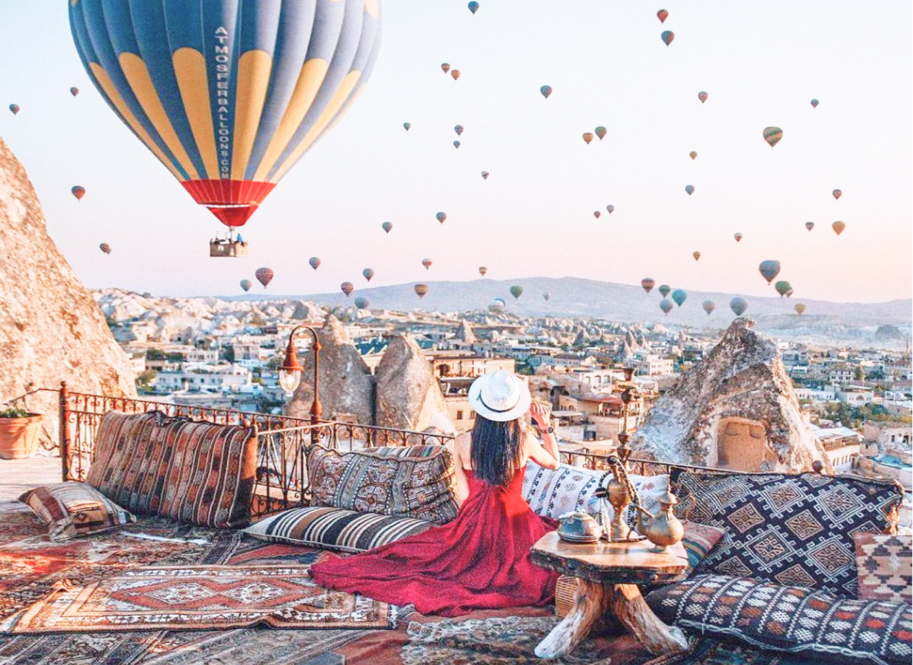

<section class="section">
    <div class="container">
        <h2 class="wonderland__title title">Fairy tail<span>Казкова країна чудес</span></h2>
        <div class="wonderland__container">
            <div class="container__slider wonderland__slider">
                <div class="wonderland__slider-item">
                    <picture>
                        <source
                            srcset="../img/Wonderland/Wonderland-img1-1x.jpg 1x, ../img/Wonderland/Wonderland-img1-2x.jpg 2x"
                            media="(min-width: 1260px)" />
                        
                    </picture>
                </div>
                <div class="wonderland__slider-item">
                    <picture>
                        <source
                            srcset="../img/Wonderland/Wonderland-img2-1x.jpg 1x, ../img/Wonderland/Wonderland-img2-2x.jpg 2x"
                            media="(min-width: 1260px)" />
                        
                    </picture>
                </div>
                <div class="wonderland__slider-item">
                    <picture>
                        <source
                            srcset="../img/Wonderland/Wonderland-img3-1x.jpg 1x, ../img/Wonderland/Wonderland-img3-2x.jpg 2x"
                            media="(min-width: 1260px)" />
                        
                    </picture>
                </div>
            </div>
            <div class="container__descr text">
                <p class="descr__text">Каппадокія – казкова країна повітряних куль, сирних будиночків,
                    різнокольорових долин та чарівних світанків!<br />
                    Сюди приїжджають, щоб побачити природні чудеса, політати на повітряній кулі і, звичайно ж,
                    зробити
                    мільйон красивих
                    фотографій!</p>
                <p class="descr__text">На учасників туру чекає професійна фотосесія від найкращих фотографів
                    Каппадокії!<br />
                    Адже саме за чарівними світанками на тлі повітряних куль сюди приїжджають люди з усього світу!
                </p>
                <h3 class="descr__title">Також Ви побачите:</h3>
                <ul class="descr__list">
                    <li>Музей на відкритому повітрі у Геремі</li>
                    <li>Ущелина Іхлара та монастир Селіме</li>
                    <li>Підземні міста</li>
                    <li>Фортеця Учхісар</li>
                    <li>Зельве та Пашабаг</li>
                    <li>и многие другие достпримечательности.</li>
                </ul>
                <p>Місцева кухня - один із приводів відвідати Каппадокію, тут є ресторани на будь-який бюджет.</p>
            </div>
        </div>
    </div>
</section>